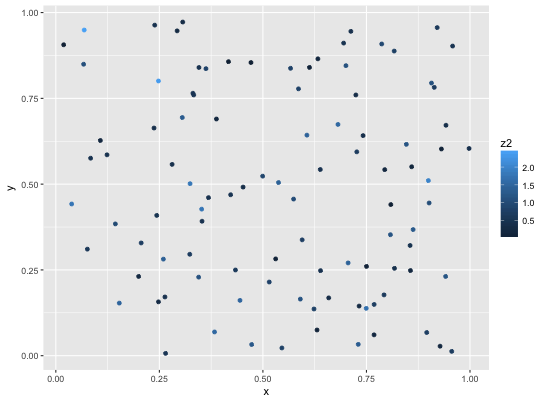
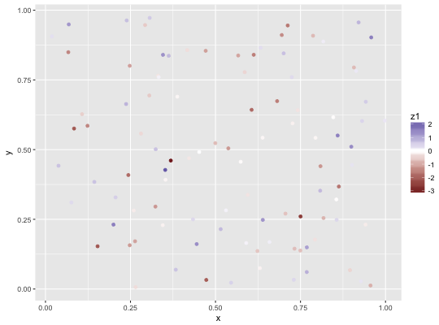
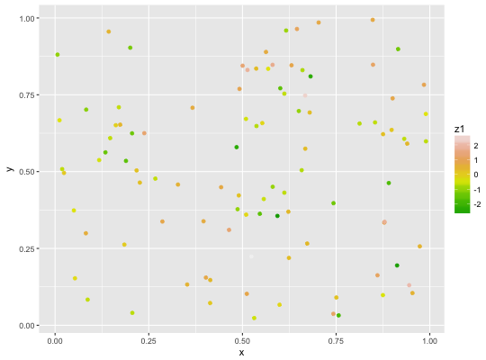
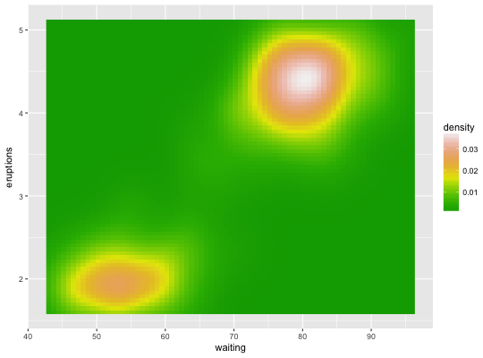
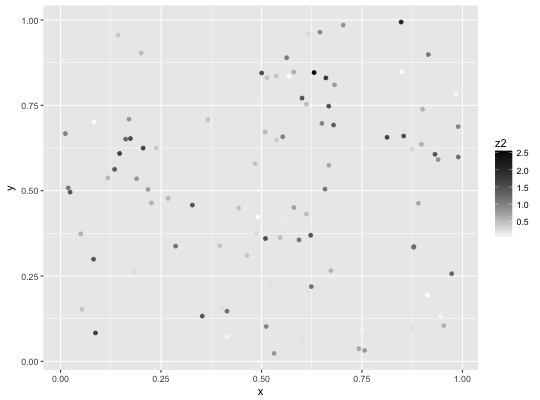

scale_*_gradient creates a two colour gradient (low-high),
scale_*_gradient2 creates a diverging colour gradient (low-mid-high),
scale_*_gradientn creats a n-colour gradient.
scale_colour_gradient(..., low = "#132B43", high = "#56B1F7", space = "Lab", na.value = "grey50", guide = "colourbar") scale_fill_gradient(..., low = "#132B43", high = "#56B1F7", space = "Lab", na.value = "grey50", guide = "colourbar") scale_colour_gradient2(..., low = muted("red"), mid = "white", high = muted("blue"), midpoint = 0, space = "Lab", na.value = "grey50", guide = "colourbar") scale_fill_gradient2(..., low = muted("red"), mid = "white", high = muted("blue"), midpoint = 0, space = "Lab", na.value = "grey50", guide = "colourbar") scale_colour_gradientn(..., colours, values = NULL, space = "Lab", na.value = "grey50", guide = "colourbar", colors) scale_fill_gradientn(..., colours, values = NULL, space = "Lab", na.value = "grey50", guide = "colourbar", colors)
| ... | Other arguments passed on to |
|---|---|
| low, high | Colours for low and high ends of the gradient. |
| space | colour space in which to calculate gradient. Must be "Lab" - other values are deprecated. |
| na.value | Colour to use for missing values |
| guide | Type of legend. Use |
| mid | colour for mid point |
| midpoint | The midpoint (in data value) of the diverging scale. Defaults to 0. |
| colours, colors | Vector of colours to use for n-colour gradient. |
| values | if colours should not be evenly positioned along the gradient
this vector gives the position (between 0 and 1) for each colour in the
|
Default colours are generated with munsell and
mnsl(c("2.5PB 2/4", "2.5PB 7/10")). Generally, for continuous
colour scales you want to keep hue constant, but vary chroma and
luminance. The munsell package makes this easy to do using the
Munsell colour system.
seq_gradient_pal for details on underlying
palette
Other colour scales: scale_alpha,
scale_colour_brewer,
scale_colour_grey,
scale_colour_hue
df <- data.frame( x = runif(100), y = runif(100), z1 = rnorm(100), z2 = abs(rnorm(100)) ) # Default colour scale colours from light blue to dark blue ggplot(df, aes(x, y)) + geom_point(aes(colour = z2))# For diverging colour scales use gradient2 ggplot(df, aes(x, y)) + geom_point(aes(colour = z1)) + scale_colour_gradient2()# Use your own colour scale with gradientn ggplot(df, aes(x, y)) + geom_point(aes(colour = z1)) + scale_colour_gradientn(colours = terrain.colors(10))# Equivalent fill scales do the same job for the fill aesthetic ggplot(faithfuld, aes(waiting, eruptions)) + geom_raster(aes(fill = density)) + scale_fill_gradientn(colours = terrain.colors(10))# Adjust colour choices with low and high ggplot(df, aes(x, y)) + geom_point(aes(colour = z2)) + scale_colour_gradient(low = "white", high = "black")# Avoid red-green colour contrasts because ~10% of men have difficulty # seeing them